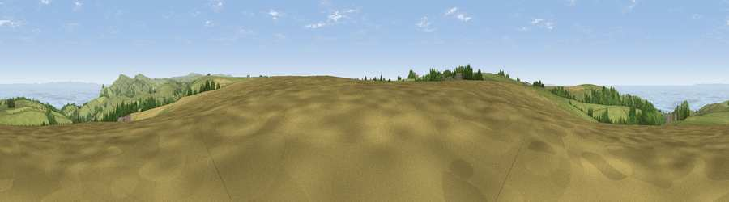

Viewpoint near Berrynarbor
#1422 in England · top 8% of its area beats it · near Berrynarbor · access?Where it is
The exact computed spot (SS 54475 44825). Click the marker for map links.
Public access: no public right of way or access land is recorded at this exact spot — it may be on private land. Computed from Natural England's CRoW access layer and OpenStreetMap rights of way — not the legal definitive map. Always verify locally.
The view, rendered

A 360° render of this exact spot computed from the terrain model, tree cover and land cover — summer colours, afternoon light, calibrated against photographs of famous viewpoints. Real trees, hedges and buildings will differ in detail.
The panorama
Grey silhouette: terrain skyline in each direction (720 bearings, Earth curvature and refraction included). Dashed green: skyline with trees (+15 m) and buildings (+8 m) as obstacles. Blue strip: how far the ground is visible on each bearing.
Where the view opens
Wedge length = distance to the farthest visible ground on that bearing (vegetation-aware). Rings at 10, 25 and 50 km.
What fills the view
51% grassland · 24% water · 17% cropland · 8% woodland ·
Angular shares of the visible panorama (visual magnitude), not map area. Landscape diversity 0.53 (0–1 Shannon).
Key numbers
More beautiful places nearby
The staircase of upgrades: each row has a higher view potential than everything closer. Driving times are estimates from straight-line distance, calibrated against real road routing — check an actual route before setting out.
| Place | Direction | Drive | Score |
|---|---|---|---|
| Viewpoint near Berrynarbor | N · 3 km | ~7 min | 81.6 |
| Viewpoint near Berrynarbor | NE · 3 km | ~7 min | 81.8 |
| Viewpoint near Ilfracombe | WNW · 4 km | ~9 min | 83.0 |
| Viewpoint near Combe Martin | NE · 5 km | ~11 min | 86.9 |
| Viewpoint near Combe Martin | ENE · 6 km | ~13 min | 88.9 |
| Holdstone Hill | ENE · 8 km | ~16 min | 90.2 |
| The Knoll | ESE · 114 km | ~139 min | 91.0 |
51.18408, -4.08357 · source: screening · position refined by local search. Computed location — check access rights before visiting.